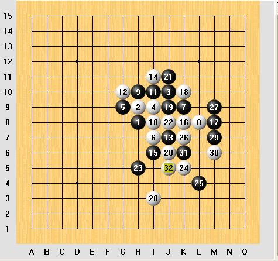

2008惜缘杯掌棋五子个人赛决赛，牛奶VS棋情五番棋讲评
#1 2008惜缘杯掌棋五子个人赛决赛，牛奶VS棋情五番棋讲评作者：掌棋宣传员 发表时间：2008-11-5 22:14:35
岁末将至，转眼又要过去一年。中国人的习惯总喜欢作作总结。掌棋盟也不能免俗，于是有了惜缘杯，有了这次五子棋个人赛。就算是年底工作总结吧。
此次内赛，算得上近年掌棋内赛里含金量较高的一回。由于Q游三棋一牌团体赛夺冠之后，掌的一线棋手进行了长时间的休整。所以对此次比赛练兵的机会。胡子军团也高度重视，打破了一线棋手不参加内赛的惯例。派出了牛奶，棋情两位重量级选手。两位偶象选手也不负众望，一路过关斩将，最终决赛会师。作为网络五子届的新，老天王。这两位，无疑是当今最具票房号召力的网络棋手。其影响，几个月前的贺岁十番棋可见一斑。作为组织者，我们预计到了决赛的精彩，特意高调处理。把比赛盘数更改为五番棋。并在有禁各房间公开进行了宣传。结果正如我们所料，或者可以说完全出乎了我们的预料。无论是棋局的精彩程度，还是观众的热情，都远远超出了我们的预期。仅旁观者人数，最多时，就有接近两百人。好了，闲话少说，书归正传。下面我们对此次比赛的五盘对局作一简评，如有不当之处，敬请批评指正。
牛奶（黑）棋情（白）第一局疏星

#2 Re:2008惜缘杯掌棋五子个人赛决赛，牛奶VS棋情五番棋讲评作者：虚无 发表时间：2008-11-6 9:47:23
不错~
#3 Re:2008惜缘杯掌棋五子个人赛决赛，牛奶VS棋情五番棋讲评作者：茗弈小刀 发表时间：2008-11-6 15:18:32
欣闻掌棋社团惜缘杯取得圆满成功，作为五子共同爱好的我们茗弈社团为你们感到骄傲和自豪！在此代表本社团全体朋友给你们带来最深的祝福：愿掌棋在新的一年走得更好更高，愿你们的付出在来年换来更丰硕的成果！
为掌棋的朋友喝彩！你们棒极了！
茗弈阁社团
2008.11.6
#4 Re:2008惜缘杯掌棋五子个人赛决赛，牛奶VS棋情五番棋讲评作者：红运 发表时间：2008-11-10 0:06:40
 恩~~~~鹅！啊~~~~在偶的印象里掌棋的各位都是行家里手团结一致共御外敌这次大赛由于消息不灵通偶只听说而已，五级郁闷厄~~~~~偶也知道后勤人员粉辛苦要写出一篇好棋评也不容易可素还是忍不住想要看点能让人由衷感到激动能感受到现场的棋评（嘿嘿，俗话不是有说内行看门道外行看热闹）谢谢楼主分享，天寒地冻来杯热热的卡布奇诺吧
恩~~~~鹅！啊~~~~在偶的印象里掌棋的各位都是行家里手团结一致共御外敌这次大赛由于消息不灵通偶只听说而已，五级郁闷厄~~~~~偶也知道后勤人员粉辛苦要写出一篇好棋评也不容易可素还是忍不住想要看点能让人由衷感到激动能感受到现场的棋评（嘿嘿，俗话不是有说内行看门道外行看热闹）谢谢楼主分享，天寒地冻来杯热热的卡布奇诺吧
［ 有志青年 于 2008-11-10 8:25:45 时奖励此帖[金币加 20 威望加1］
#5 Re:2008惜缘杯掌棋五子个人赛决赛，牛奶VS棋情五番棋讲评作者：啊呆 发表时间：2010-7-22 21:58:11
09年没举行 盼望你们补办一次 还有你们的攻擂活动咋就07年办了一次#6 Re:2008惜缘杯掌棋五子个人赛决赛，牛奶VS棋情五番棋讲评作者：鬼冢弹间 发表时间：2010-7-23 13:42:39
期待掌棋举行比赛再现当年风采。。